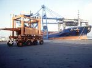

| SERVICES |

For ensuring non-stop transportation and full set of service we arrangeto our clients the following:
- full spectrum of forwarding service for all types of cargoes;
- customs clearance and certification of cargoes;
- full logistical service for import/export and transit cargoes;
- cargo survey. Partner company PRIMESURVEY
- insurance of cargoes and shipments
- booking, stuffing/unstaffing of containers;
- competitive inland haulage rates;
- cargo movement tracing;
We always follow the changes in our field and keep up with the technological developments in order to be more successful in our business.